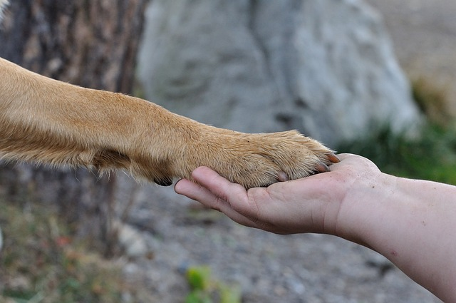
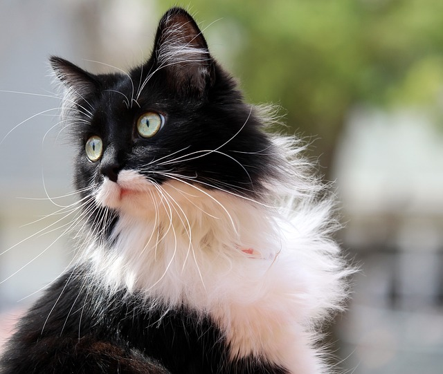

¿Quién rescató a quién?
"Cambiando vidas, una patita a la vez."
Rescata un corazón, adopta un amigo.
"Rescata un corazón, adopta un amigo" es más que una simple frase; es un recordatorio de la profunda conexión que existe entre los seres humanos y los animales. Cuando decidimos abrir nuestros corazones y hogares a un animal rescatado, no solo les estamos dando una segunda oportunidad en la vida, sino que también estamos rescatando nuestros propios corazones de la rutina y el egoísmo.
La experiencia de adoptar a un amigo peludo no solo nos llena de amor y alegría, sino que también nos desafía a ser personas más compasivas y responsables. Nos enseña a cuidar y proteger a aquellos que son vulnerables y dependen de nosotros. Nos recuerda que nuestras acciones tienen un impacto significativo en el bienestar de otros seres vivos.
Cada vez que damos un paso hacia la adopción, estamos contribuyendo a un mundo en el que los animales no son abandonados ni maltratados, sino amados y apreciados. Estamos promoviendo una cultura de compasión y empatía que se extiende más allá de nuestras casas y hacia la sociedad en su conjunto.
Así que, la próxima vez que te encuentres con la oportunidad de adoptar a un amigo peludo, recuerda esta frase: "Rescata un corazón, adopta un amigo". Porque al hacerlo, no solo estarás cambiando la vida de un animal necesitado, sino también la tuya propia, llenándola de amor, gratitud y un sentido más profundo de propósito. En última instancia, adoptar a un amigo peludo es un recordatorio de que, en este mundo, todos somos responsables de rescatar y cuidar los corazones de otros, humanos y no humanos por igual.
Tomemos conciencia
Sobrepoblación de Animales: Cada año, millones de animales terminan en refugios y perreras debido a la sobrepoblación. La mayoría de estos animales son saludables y amigables, pero muchos son sacrificados debido a la falta de espacio y recursos.
Esterilización y Castración: La esterilización y la castración de animales son prácticas clave para controlar la sobrepoblación y reducir el número de animales abandonados. Un solo par de gatos puede generar hasta 420,000 gatos en siete años si no se controla la reproducción.
Animales Abandonados: Miles de animales son abandonados por sus dueños cada año. Esto causa angustia y sufrimiento innecesario para los animales, que a menudo luchan por sobrevivir en condiciones peligrosas.

Adopción Salva Vidas: Al adoptar un animal de un refugio o rescate, estás salvando una vida y brindando un hogar a un animal que lo necesita desesperadamente. Además, estás ayudando a liberar espacio para otros animales necesitados.
Animales de Todas las Razas y Edades: Los refugios y rescates tienen animales de todas las edades y razas, incluyendo cachorros y gatos jóvenes. Si tienes una preferencia específica, es probable que puedas encontrarla en un refugio.
Animales Leales y Agradecidos: Los animales rescatados a menudo son especialmente leales y agradecidos. Muchos han experimentado dificultades en sus vidas y están ansiosos por encontrar un hogar amoroso.
Reducción de Comportamientos Problemáticos: Adoptar un animal adulto puede ser beneficioso, ya que a menudo ya están entrenados y han superado los comportamientos problemáticos típicos de los cachorros.

Cuidados Veterinarios: Muchos animales de refugio y rescate ya han recibido atención médica básica, como vacunas y esterilización/castración. Esto puede reducir los costos iniciales para los dueños. Contribución a la Comunidad: Al adoptar, estás apoyando a organizaciones locales de rescate y refugios, que a menudo dependen de donaciones y voluntarios para funcionar. Amor Incondicional: Los animales rescatados tienen una capacidad asombrosa para dar amor incondicional a pesar de sus experiencias pasadas.